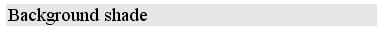
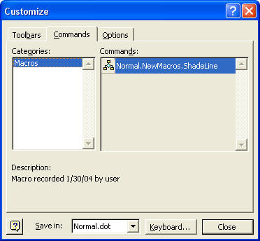
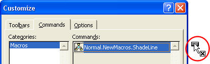
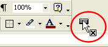
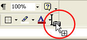
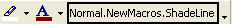
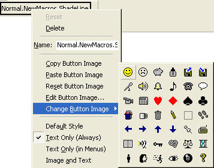
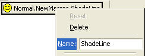
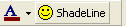

Free
computer Tutorials
|
Free
computer Tutorials
|
|
 home home |
|
||||
How to Place your Macro on the Word ToolbarOK, we'll create another new macro. This macro will add a background shade to a line of text. Like this one below:  Except our macro won't add the text - it will just add the shade to any line we choose. And we're going to create this macro in the toolbar. We'll see how to add a button in any toolbar. When we want to shade a line of text, all we need to do is click the button. We don't have to open the Borders and Shading dialogue box. So let's make a start.
 This is where the fun starts! The idea now is drag your macro to a toolbar and drop it. Your macro is the one under "Commands". Ours says Normal.NewMacros.ShadeLine, and there's a little icon to the left if it. To drag it to a toolbar, do the following.
Keep your eyes on the mouse pointer. As soon as you start dragging it will look like the one below:  Notice the mouse pointer, circled in red above. This is what it looks like when you hold down your left mouse button and start dragging. Pay particular attention to the black X just below the white arrow. The black X means that you can't drop your macro in that position. In the next picture, the mouse button is held down and the macro is being dragged to the toolbar area:  The macro is now on a grey area of the toolbar. Notice that the black X is still there. So we can't drop our macro here, either. The left mouse button is still being held down, by the way. In this next picture the macro is now being dragged onto a toolbar itself:  The thing to notice now is the black X below the white mouse pointer is no longer there. We now have a plus + sign. There is also a black I bar. What all this means is that you can now let go of the left mouse button. You have found a place where it is possible to drag your macro - on a toolbar. When you let go of your mouse, your toolbar will look like this:  That's your macro right there! Or rather, it is the button for your macro. When this button is clicked, it will run your macro. (We haven't created the macro itself yet. We're just setting up the toolbar button for it.) The button looks a bit big and messy. We can format it.

We don't need all that Normal.NewMacro.ShadeLine on it, though. Let's get rid of some it:

 That's much nicer. We can now start to record the macro
for the button. So click the Close button on the Customize dialogue
box. You are returned to your Word document, and the little recorder will be on the page. Record the macro by doing the following.
You will have a shaded line going across the page. Move your cursor down a few lines. If the shade moves with your cursor, get rid of the shading by clicking on Format > Borders and Shading. Select the Shading tab strip again, and click on No fill at top of the colour squares. Click the OK button.
And that it is how to add a macro to the toolbar. If you got this far, and added a button to the toolbar, then very well done indeed! You're becoming something of a Word expert, because this is quite advanced Word Processing.
You may, however, want to get rid of the button from your toolbar. We'll see how to do that in the next section. Deleting a Macro from the Toolbar --> |
|||||
|